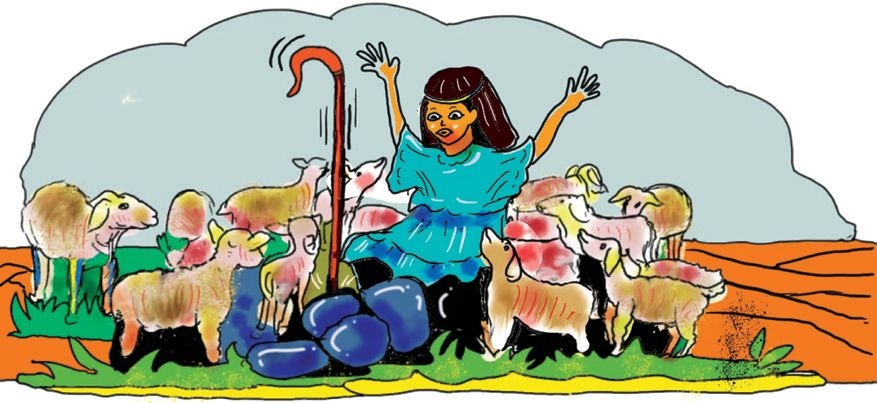
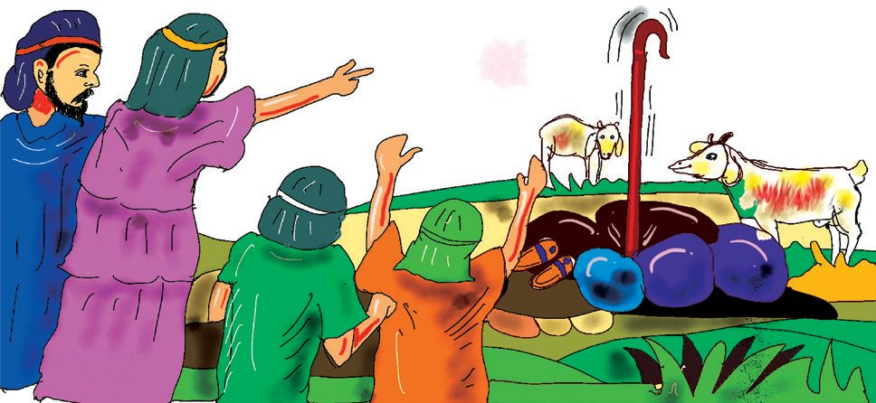
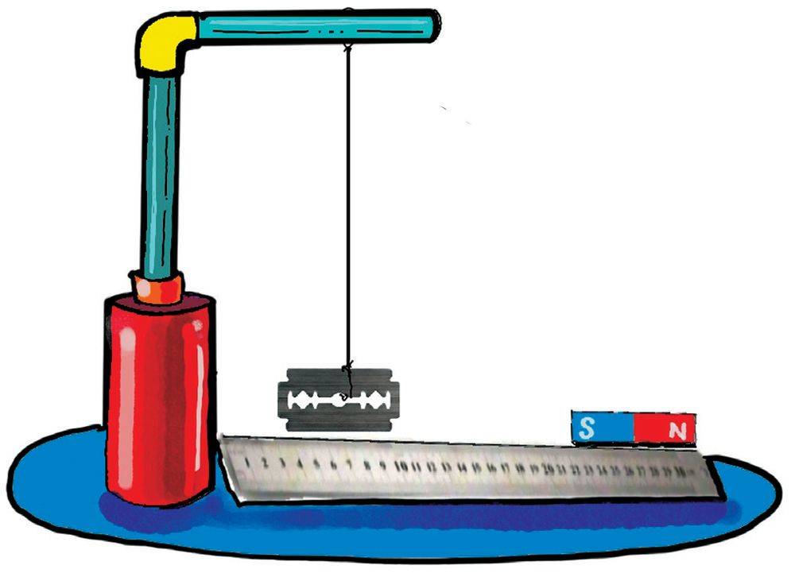
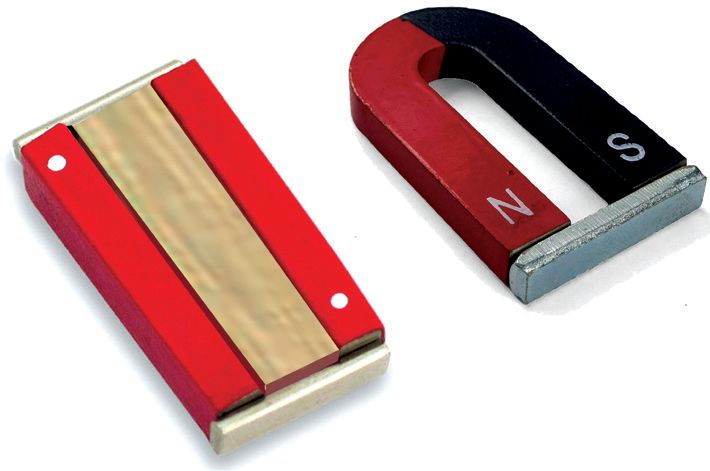
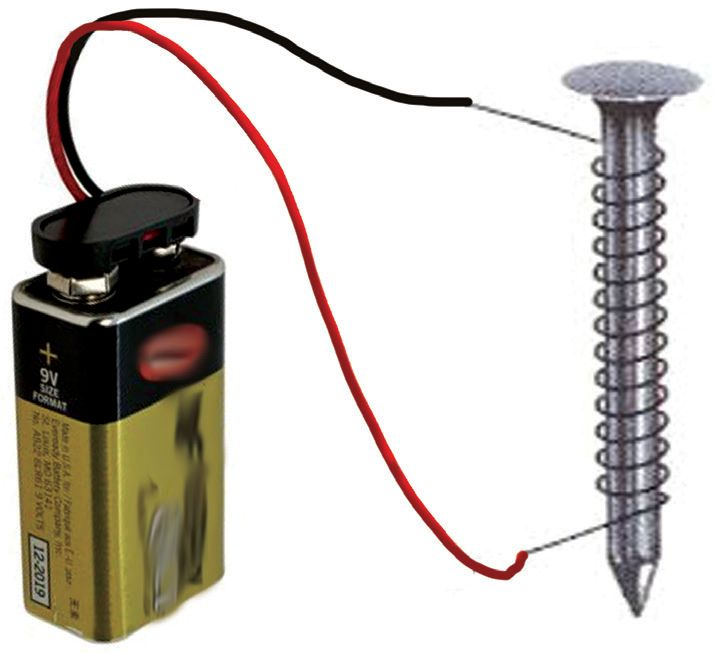
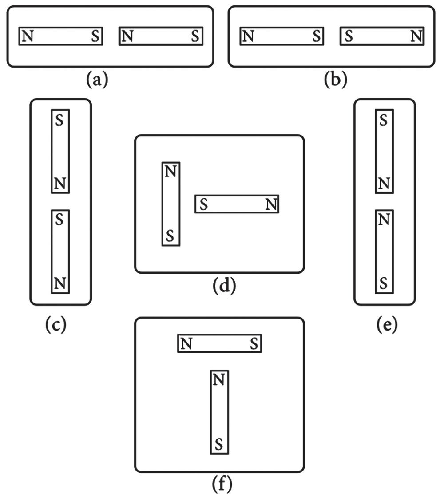

ചിത്രങ്ങൾ നിരീക്ഷിക്കൂ. നിങ്ങൾക്ക് പരിചിതമായ ചില വസ്തുക്കളല്ലേ ഇവ. ഏതൊൊക്കെ
യാണ് ഇവയെന്ന് എഴുതൂ.
ഇത്തരം സാധനങ്ങൾ അടയ്ക്കുമ്പോോൾ അവയുടെ അടപ്പ് പെട്ടെന്ന് ഒട്ടിച്ചേരുന്നത് നിങ്ങളുടെ
ശ്രദ്ധയിൽപ്പെട്ടിട്ടില്ലേ. എന്തുകൊൊണ്ടാണ് ഇങ്ങനെ സംഭവിക്കുന്നതെന്ന് പറയാമോോ? ഒരു
മൊൊട്ടുസൂചി ഇവയുടെ അടയ്ക്കുന്ന ഭാഗങ്ങളുടെ അടുത്ത് കൊൊണ്ടുവന്നാൽ എന്തു സംഭ
വിക്കും? എന്തുകൊൊണ്ടാണ് ഇവ പെട്ടെന്ന് ഒട്ടിപ്പിടിക്കുന്നതെന്ന് ഊഹിച്ചു പറയാമോോ?
ചർച്ചചെയ്യൂ.
നിങ്ങളുടെ വീട്ടിലും കാന്തം ഉണ്ടാകുമല്ലോോ. നിങ്ങളുടെ ശാസ്ത്രകിറ്റിൽ കാന്തങ്ങൾ ഉണ്ടോോ?
അവ എവിടെനിന്നെല്ലാം ശേഖരിച്ചവയാണ്?
കേടായ ലൗൗഡ്
സ്പീക്കറിൽ നിന്നാണ്
ഞാൻ കാന്തം
ശേഖരിച്ചത്.
ശാസ്ത്രകിറ്റിലുള്ള ഒരു കാന്തമെടുക്കൂ. ഒരു സ്റ്റീൽ
ജംക്ലിപ്പ് അതിനോോട് ചേര്ത്തുവയ്ക്കൂ. കൈവിട്ടാല്
ക്ലിപ്പ് വീഴുന്നുണ്ടോോ? ആ ക്ലിപ്പില് മറ്റൊൊരു ക്ലിപ്പ്
ചേര്ത്തുവയ്ക്കൂ. ഇങ്ങനെ എത്ര ക്ലിപ്പുകള് തൂക്കി
നിർത്താൻ കഴിയും എന്ന് നോോക്കാം.
നമുക്ക് ഒരു മത്സരമായാലോോ.
അതിനായി ശാസ്ത്രകിറ്റിൽനിന്ന്
താഴെപ്പറയുന്ന സാമഗ്രികള്
എടുത്തുവയ്ക്കൂ.
u
കാന്തം
u
ജംക്ലിപ്പുകൾ
u
മൊൊട്ടുസൂചി
u
ആണി
ആദ്യംം ജംക്ലിപ്പുകളുംം കാന്തവും എടുത്തോോളൂ. പിന്നെ ഒന്നിന് താഴെ മറ്റൊൊന്ന് എന്ന
രീതിയിൽ മുകളിലത്തെ ചിത്രത്തില് കാണുന്നതുപോോലെ ക്രമീകരിച്ചുനോോക്കൂ. അങ്ങനെ
മാലപോോലെയാക്കൂ. ഏറ്റവും നീളംകൂടിയ മാല ആരുണ്ടാക്കിയതാണ്? മാലയിൽ എത്ര
ജംക്ലിപ്പുകൾ ഉണ്ട്?
ഒരു മാലയിൽ പലതരത്തിലുള്ള മുത്തുകൾ ഉണ്ടാവില്ലേ.
ഇവിടെയും അതുപോോലെ പലനിറത്തിലുള്ള ജംക്ലിപ്പും
പിന്നും ആണിയുമൊൊക്കെ ഉപയോോഗിച്ചാലോോ? ആരാണ്
ഏറ്റവും ഭംഗിയുള്ള മാല ഉണ്ടാക്കിയതെന്ന് പരിശോോധി
ക്കു.
കാന്തംകൊൊണ്ടൊൊരു മാജിക്
ക്ലാസിൽ ഒരു മാജിക് അവതരിപ്പിച്ചാലോോ. ആവ
ശ്യയമുള്ള സാമഗ്രികൾ.
u
പൂമ്പാറ്റയുടെ ചിത്രം വെട്ടിയെടുത്ത ശേഷം അതിന് അടിവശത്തായി ഒരു സേഫ്റ്റിപിൻ
പുറമേ കാണാത്തവിധം കുത്തിവയ്ക്കുക. അത് ഒരു ചാർട്ട്പേപ്പറിന്റെ പുറത്ത് വയ്ക്കുക.
ചാർട്ട്പേപ്പറിന്റെ അടിയിൽ കാന്തംവച്ച് ചലിപ്പിച്ച് നോോക്കൂ. കാന്തം ചലിപ്പിക്കുന്നതിന
നുസരിച്ച് പൂമ്പാറ്റ ചലിക്കുന്നില്ലേ? കാന്തം മാറ്റുമ്പോോൾ എന്ത് സംഭവിക്കും? പൂമ്പാറ്റയു
ടെ ചിത്രത്തിന് പകരം മറ്റെന്തൊൊക്കെ ചിത്രങ്ങളാകാം? പരീക്ഷിച്ചുനോോക്കൂ.
ചാർട്ട്പേപ്പർ കുത്തനെ പിടിച്ച് ഈ മാജിക് നിങ്ങളുടെ രക്ഷിതാക്കൾക്ക് കാണിച്ചു
കൊൊടുക്കൂ. അങ്ങനെ നിങ്ങള്ക്കും ഒരു മജീഷ്യയനാകാം.
കാന്തംകൊൊണ്ടൊൊരു ചിത്രം
കാന്തം ഉപയോോഗിച്ച് ചിത്രം വരച്ചാലോോ. ഈ ചിത്രം വരയ്ക്കാൻ എന്തെല്ലാം വേണമെന്ന്
നോോക്കാം
u
ചെറിയ ലോോഹബോോളുകൾ (സൈക്കിളിൽ ഉപയോോഗിക്കുന്നത്) അല്ലെങ്കില് ജംക്ലിപ്പുകൾ.
u
കാന്തം
വരച്ചു തുടങ്ങിയാലോോ. പ്ലേറ്റിൻ്റെ പല സ്ഥലങ്ങ
ളിലായി വിവിധനിറത്തിലുള്ള പെയിൻ്റ്തുള്ളികൾ
ക്രമീകരിക്കുക. നാലോോ അഞ്ചോോ ചെറിയ ലോോഹ
ബോോളുകൾ പ്ലേറ്റിൽ വച്ചശേഷം പ്ലേറ്റിന്റെ അടിയിൽ
വച്ച കാന്തം ചലിപ്പിക്കുക. ഇപ്പോോൾ എന്ത് നിരീക്ഷി
ക്കുന്നു. ചില പാറ്റേണുകൾ പെയിന്റിലൂടെ നീങ്ങു
ന്ന ബോോളുകള് ഉണ്ടാക്കുന്നില്ലേ?
ചിത്രത്തിന് ബോോഡറുകള് വരച്ച് ഭംഗിയാക്കൂ. ചിത്ര
ങ്ങള് കൈമാറി പരസ്പരം വിലയിരുത്തൂ.
എല്ലാ വസ്തുക്കളെയും കാന്തം ആകര്ഷിക്കുമോോ? നമുക്ക് പരീക്ഷിച്ചുനോോക്കാം.
കാന്തം ആകര്ഷിക്കുന്നവയും ആകര്ഷിക്കാത്തവയും
ഏതെല്ലാം വസ്തുക്കളെ കാന്തം ആകർഷിക്കും? ശാസ്ത്രകിറ്റിൽനിന്ന് ലഭ്യയമായ സാധനങ്ങൾ
എടുത്ത് പ്രവർത്തനം ചെയ്യൂ. നിങ്ങളുടെ കണ്ടെത്തല് പട്ടികപ്പെടുത്തൂ.
കാന്തം ആകർഷിക്കുന്നവ കാന്തം ആകർഷിക്കാത്തവ
കാന്തം ആകർഷിക്കുന്ന വസ്തുക്കളാണ് കാന്തികവസ്തുക്കൾ. ഇരുമ്പ്, നിക്കല്, കൊൊ
ബാള്ട്ട് തുടങ്ങിയവ കാന്തികവസ്തുക്കളാണ്. കാന്തം ആകർഷിക്കാത്ത വസ്തുക്കളാ
ണ് അകാന്തികവസ്തുക്കൾ. പേപ്പര്, പ്ലാസ്റ്റിക്, സ്വവര്ണ്ണം, മരം തുടങ്ങിയവ അകാന്തി
കവസ്തുക്കളാണ്.
കൂടുതല് വസ്തുക്കള് പരിശോോധിച്ച് അവയെ കാന്തികവസ്തുക്കള്, അകാന്തികവസ്തുക്കള്
എന്നിങ്ങനെ തരംതിരിച്ച് പട്ടികപ്പെടുത്തൂ.
കാന്തികവസ്തുക്കൾ
അകാന്തികവസ്തുക്കൾ
• ആണി
• തുണി
•
•
കാന്തികശക്തി ധ്രുവങ്ങളിൽ
കുറച്ച് മൊൊട്ടുസൂചികളുടെ അടുത്തേക്ക് ഒരു കാന്തത്തിന്റെ അഗ്രഭാഗവും പിന്നീട് അതിന്റെ
മധ്യയഭാഗവും കാണിച്ചു നോോക്കൂ. കാന്തത്തിന്റെ ഏതു ഭാഗത്താണ് കൂടുതൽ മൊൊട്ടുസൂചി
കൾ ആകർഷിക്കപ്പെടുന്നത്? ഇത് കണ്ടെത്താന് ഒരു പ്രവർത്തനം കൂടി ചെയ്താലോോ?
എന്തെല്ലാം സാധനങ്ങൾ വേണം?
u
ഒരു പേപ്പറിൽ പൊൊതിഞ്ഞ ബാർകാന്തം
(Bar Magnet)
u
ഇരുമ്പുപൊൊടി
ബാർകാന്തം ഇരുമ്പുപൊൊടിയുടെ വളരെ അടുത്തേ
ക്ക് കൊൊണ്ടുവരുമ്പോോൾ ഇരുമ്പുപൊൊടി കാന്തത്തിൽ
പറ്റിപ്പിടിക്കില്ലേ. ബാർകാന്തത്തിൽ പറ്റിപ്പിടിച്ച
ഇരുമ്പുപൊൊടി എളുപ്പത്തിൽ നീക്കുന്നതിനാണ് ബാർകാന്തം പേപ്പറിൽ പൊൊതിഞ്ഞത്.
ഇരുമ്പുപൊൊടി കാന്തത്തിൻ്റെ എല്ലാ ഭാഗത്തും ഒരുപോോലെയാണോോ ഒട്ടിപ്പിടിച്ചിരിക്കുന്നത്?
ഏതെങ്കിലും ഭാഗത്ത് കൂടുതലുണ്ടോോ? എന്തുകൊൊണ്ടാണ് ഇങ്ങനെ സംഭവിക്കുന്നത്?
കൂട്ടുകാരുമായി ചർച്ചചെയ്യൂ.
കാന്തികധ്രുവങ്ങള് (Magnetic Poles)
സാധാരണയായി കാന്തത്തിന്റെ ആകർഷണബലം കൂടുതൽ അതിൻ്റെ അഗ്രങ്ങ
ളിലാണ്. ആകർഷണശക്തി കൂടിയ ഈ അഗ്രഭാഗങ്ങളാണ് കാന്തികധ്രുവങ്ങൾ.
ഏതൊൊരു കാന്തത്തിനും രണ്ട് ധ്രുവങ്ങളുണ്ട്.
28
കാന്തം ബലം പ്രയോോഗിക്കുമോോ?
മേശപ്പുറത്ത് ഒരു കാന്തംവച്ച് അഗ്രഭാഗത്തിന് അല്പം അകലെ ഒരു മൊൊട്ടുസൂചിവയ്ക്കുക.
മൊൊട്ടുസൂചി കാന്തത്തിനടുത്തേയ്ക്ക് സാവധാനം നീക്കിനോോക്കൂ. കാന്തത്തിന് സമീപമെത്തു
മ്പോോള് മൊൊട്ടുസൂചിക്ക് എന്താണ് സംഭവിക്കുന്നത്? കാന്തം ബലം പ്രയോോഗിക്കുന്നതുകൊൊ
ണ്ടാണോോ ഇങ്ങനെ സംഭവിച്ചത്? ചർച്ചചെയ്യൂ.
കാന്തികമണ്ഡലം (Magnetic Field)
കാന്തം പ്രയോോഗിക്കുന്ന ബലമാണ് കാന്തികബലം. കാന്തത്തിനുചുറ്റുംം കാന്തികബലം
അനുഭവപ്പെടുന്ന പ്രദേശമാണ് കാന്തികമണ്ഡലം. കാന്തികമണ്ഡലം അദൃശ്യയമാണ്.
കാന്തികമണ്ഡലരേഖകൾ വരയ്ക്കാം
കാന്തികമണ്ഡലം എന്താണെന്ന് നിങ്ങൾ പഠിച്ചല്ലോോ? കാന്തികമണ്ഡലത്തിൽ കാന്തികബ
ലം അനുഭവപ്പെടുമെന്നും നിങ്ങൾ കണ്ടെത്തിയില്ലേ. ഒരു പരീക്ഷണം ചെയ്താലോോ. എന്തെ
ല്ലാം വസ്തുക്കൾ വേണം?
u
ചതുരാകൃതിയിലുള്ള ഗ്ലാസ് ഷീറ്റ്
u
കാന്തം
u
ഇരുമ്പുപൊൊടി
ചതുരാകൃതിയിലുള്ള ഗ്ലാസ് ഷീറ്റ് ചിത്രത്തിൽ കാണുന്നതു
പോോലെ പുസ്തകങ്ങൾക്കിടയിൽ ക്രമീകരിക്കൂ. അതിനടിയിൽ ഒരു ബാർകാന്തം വച്ചശേ
ഷം ഗ്ലാസിനുപുറത്ത് ഇരുമ്പുപൊൊടി വിതറു. ആവശ്യയമെങ്കിൽ ഗ്ലാസ് ഷീറ്റിന്റെ പുറത്ത്
ചെറുതായി തട്ടിക്കൊൊടുക്കാം. എന്താണ് നിങ്ങൾ നിരീക്ഷിച്ചത്?
ഇരുമ്പുപൊൊടി പ്രത്യേേകരീതിയിൽ ക്രമീകരിക്കപ്പെടുന്നില്ലേ?
ഈ ക്രമീകരണം കാന്തികമണ്ഡലരേഖകളെ സൂചിപ്പിക്കു
ന്നു. ഇത് കാന്തികമണ്ഡലത്തിന്റെ ഭാഗമാണ്. നിങ്ങൾ നിരീ
ക്ഷിച്ച കാന്തികമണ്ഡലരേഖകളെ ചിത്രീകരിക്കൂ.
കാന്തികമണ്ഡലത്തിൽ കാന്തികമണ്ഡലരേഖകൾ ഉണ്ട്. ഇവ
രണ്ടും അദൃശ്യയമാണ്. ചിത്രം നോോക്കൂ. കാന്തികമണ്ഡലരേഖ
കൾ എങ്ങനെ ചിത്രീകരിക്കാമെന്ന് മനസ്സിലായില്ലേ.
അധികവായനയ്ക്ക്
കാന്തങ്ങളുടെ നിർമ്മാണം
കാന്തികവസ്തുക്കൾ ഉപയോോഗിച്ചാണ് കാന്തം നിർമ്മിച്ചിട്ടുള്ളത്. അൽനിക്കോോ എന്ന
ലോോഹസങ്കരമാണ് (അലൂമിനിയം, നിക്കൽ, കൊൊബാൾട്ട്, ഇരുമ്പ് എന്നിവയുടെ
സങ്കരം) ഇതിനായി ഉപയോോഗിക്കുന്നത്. മറ്റു പല വസ്തുക്കളുംം കാന്തനിർമ്മാണത്തി
നായി ഉപയോോഗിക്കുന്നു. സമേരിയം, കൊൊബാൾട്ട്, ഫറൈറ്റ് റബ്ബർ, നിയോോഡീമിയം
എന്നിവകൊൊണ്ടുണ്ടാക്കിയ വിവിധതരം കാന്തങ്ങള് നിലവിലുണ്ട്. ഇവയിൽ നിയോോ
ഡീമിയം കാന്തങ്ങൾ കൂടുതൽ ശക്തിയുള്ളവയാണ്.
29
മണ്ണിലെ കാന്തികവസ്തുക്കള്
സ്കൂൾഗ്രൗൗണ്ടിലും പരിസരങ്ങളിലും ഉള്ള
മണ്ണില് കാന്തികവസ്തുക്കള് ഉണ്ടോോ? ഇതു
കണ്ടെത്തുന്നതിന് ഒരു പ്രവർത്തനം
ചെയ്യാം.
ഒരു പഴയ മ്യൂൂസിക് സിസ്റ്റത്തിന്റെ ലൗൗഡ്
സ്പീക്കറില്നിന്ന് ഒരു കാന്തം സംഘടിപ്പി
ക്കു. പഴയ സാധനങ്ങൾ ശേഖരിക്കുന്ന
കടയിൽനിന്ന് പഴയ സ്പീക്കര് ലഭ്യയമാവും.
ഗ്രൂപ്പുകളായി പ്രവർത്തനം ചെയ്യൂ. കാന്തം കട്ടിയുള്ള ഒരു പേപ്പറിൽ പൊൊതിഞ്ഞ് ഒരു
കയറില്കെട്ടി മണ്ണിലൂടെ കുറച്ചുസമയം വലിച്ചുകൊൊണ്ട് നടന്നശേഷം പരിശോോധിക്കു.
കാന്തത്താൽ ആകർഷിക്കപ്പെട്ട് പേപ്പറിൽ എന്തെങ്കിലും പറ്റിപ്പിടിച്ചിട്ടുണ്ടോോ? ഇതിൻ്റെ
കാരണം എന്താണ്?
മണ്ണും ഇരുമ്പും കലർന്ന പദാർഥത്തിൽനിന്ന് ഇരുമ്പ് വേർതിരിക്കാൻ ഈ പരീക്ഷണ
ത്തിൻ്റെ അടിസ്ഥാനത്തിൽ ഒരു മാർഗം നിർദേശിക്കാമോോ?
പലതരം കാന്തങ്ങള്
കാന്തങ്ങൾക്കെല്ലാം ഒരേ ആകൃതിയാണോോ? നിങ്ങളുടെ ശാസ്ത്രകിറ്റിലെയും ലാബിലെയും
കാന്തങ്ങൾ പരിശോോധിക്കൂ. എല്ലാം ഒരുപോോലെയാണോോ?
താഴെക്കൊൊടുത്ത ചിത്രത്തിലുള്ളവയെല്ലാം പലതരത്തിലുള്ള കാന്തങ്ങളാണ്. ഇവ ആകൃ
തിയിൽ എങ്ങനെ വ്യയത്യാസപ്പെട്ടിരിക്കുന്നു? താരതമ്യംം ചെയ്യൂ.
ലാട
കാന്തം
ബാർ
സിലിണ്ട്രി
കാന്തം ക്കൽ കാന്തം
കാന്ത
സൂചി
ഓവൽ
കാന്തം
U
കാന്തം
ഡിസ്ക്
കാന്തം
റിംംഗ്
കാന്തം
ആകൃതിക്കനുസരിച്ചാണോോ ഇവയ്ക്ക് പേരുകൾ നൽകിയിരിക്കുന്നത്? ശാസ്ത്രപുസ്തകത്തിൽ
വിവിധയിനം കാന്തങ്ങളുടെ ചിത്രം വരച്ച് പേര് രേഖപ്പെടുത്തൂ.
തെക്കും വടക്കും
ഒരു കാന്തത്തിന് രണ്ട് ധ്രുവങ്ങള് ഉണ്ടെന്ന് മനസ്സിലാക്കിയല്ലോോ. ഈ ധ്രുവങ്ങള്ക്ക് മറ്റെ
ന്തെങ്കിലും പ്രത്യേേകതയുണ്ടോോ? നമുക്ക് പരിശോോധിക്കാം.
30
ബാർകാന്തത്തിന്റെ മധ്യയഭാഗത്ത് ഒരു നൂലുകെട്ടി ചിത്ര
ത്തിൽ കാണുന്നതുപോോലെ സ്വവതന്ത്രമായി തൂക്കിനിർത്തൂ.
കാന്തത്തിൻ്റെ ചലനം നില്ക്കുമ്പോോൾ ഇതിന്റെ ധ്രുവങ്ങൾ
ഏത് ദിക്കിലേക്കാണ് നിൽക്കുന്നത്?
കിഴക്കുപടിഞ്ഞാറ് ഭാഗത്തേക്കാണോോ അതോോ തെക്കുവടക്ക് ഭാഗത്തേക്കാണോോ? കാന്ത
ത്തിന്റെ ദിശമാറ്റി വീണ്ടും പരിശോോധിക്കൂ. നേരത്തെ നിന്നിരുന്ന അതേ ദിശയിലേക്ക്
വരുന്നുണ്ടോോ? ഈ പ്രവർത്തനത്തിന്റെ അടിസ്ഥാനത്തില് കാന്തികധ്രുവങ്ങള്ക്ക് പേര്
നല്കൂ. സജ്ജീകരണത്തിന്റെ സ്ഥാനം മാറ്റി പരീക്ഷണം ആവർത്തിക്കൂ.
കാന്തികധ്രുവങ്ങള് (Magnetic Poles)
ദക്ഷിണധ്രുവം
ഉത്തരധ്രുവം
ഭൂമിയുടെ വടക്കുദിശയിലേക്ക് നിൽക്കുന്ന അഗ്രത്തെ
കാന്തത്തിൻ്റെ ഉത്തരധ്രുവം (North Pole) എന്നും
ഭൂമിയുടെ തെക്കുദിശയിലേക്ക് നിൽക്കുന്ന അഗ്രത്തെ
കാന്തത്തിൻ്റെ ദക്ഷിണധ്രുവം (South Pole) എന്നും
പറയുന്നു. അവയെ N, S എന്നീ അക്ഷരങ്ങൾകൊൊ
ണ്ടാണ് സൂചിപ്പിക്കുന്നത്. ബാർകാന്തത്തിൽ ഉത്തര
ധ്രുവത്തെ സൂചിപ്പിക്കാൻ പ്രത്യേേക അടയാളം കൊൊ
ടുക്കാറുണ്ട്. സാധാരണയായി ഒരു വെള്ള സ്പോോട്ടാണ്
ഉത്തരധ്രുവത്തിൽ അടയാളമായി കൊൊടുക്കുന്നത്.
സ്വവതന്ത്രമായി തൂക്കിയിട്ട കാന്തം
എപ്പോോഴുംം തെക്കുവടക്ക് ദിശയിൽ
നിൽക്കുന്നു.
കാന്തത്തിന്റെ ഈ പ്രത്യേേകത ഉപ
യോോഗിച്ച് ദിക്കുകൾ കണ്ടെത്താന്
കഴിയുമോോ?
കാന്തം പൊൊട്ടിയാല്
ഒരു കാന്തം മുറിഞ്ഞ് രണ്ട്
കഷണങ്ങളായാല്
എന്ത്
സംഭവിക്കും? രണ്ട് കഷണ
ങ്ങളുംം ഓരോോ ചെറുകാന്ത
ങ്ങളായിത്തീരുന്നു.
വടക്കുനോോക്കിയന്ത്രം നിര്മ്മിക്കാം
പണ്ട് കടലിലൂടെയും മരുഭൂമിയിലൂടെയും യാത്ര ചെയ്തിരുന്നവർ
ദിക്കറിയാൻ പല മാർഗങ്ങളുംം ഉപയോോഗിച്ചിരുന്നു. ധ്രുവനക്ഷത്ര
ത്തെയും മറ്റുചില നക്ഷത്രസമൂഹത്തെയും അവർ ഇതിന് പ്രയോോ
ജനപ്പെടുത്തിയിരുന്നു. കാന്തത്തിന്റെ സവിശേഷത തിരിച്ചറിഞ്ഞ
തോോടെ ദിക്കറിയാനുള്ള മാർഗം വളരെ എളുപ്പമായി. കാന്തത്തിൻ്റെ
ഏത് സ്വവഭാവമാവും ഇവർ പ്രയോോജനപ്പെടുത്തിയിട്ടുണ്ടാവുക? കൂട്ടു
കാരുമായി ചർച്ച ചെയ്യൂ.
31
കാന്തമുപയോോഗിച്ച് ദിക്ക് നിർണ്ണയിക്കാൻ സഹായിക്കുന്ന ഒരു ഉപകര
ണമാണ് വടക്കുനോോക്കിയന്ത്രം.
ഒരു വടക്കുനോോക്കിയന്ത്രം സയൻസ് ലാബിൽനിന്ന് സംഘടിപ്പിക്കു.
അതുപയോോഗിച്ച് ക്ലാസ് മുറിയുടെ വാതിൽ ഏത് ദിക്കിലാണ് എന്ന്
കണ്ടെത്തൂ. നിങ്ങളുടെ ക്ലാസ്മുറിയെ അടിസ്ഥാനമാക്കി സ്കൂൾഗേറ്റ്
ഏത് ദിക്കിലാണ്? പാചകപ്പുരയോോ? ഓഫീസ് മുറിയോോ? കണ്ടെത്തൂ.
ഇനി നമുക്ക് സ്വവന്തമായി ഒരു വടക്കുനോോക്കിയന്ത്രം നിർമ്മിക്കാം. എന്തെ
ല്ലാം സാമഗ്രികൾ വേണം?
u
കാന്തം
u
സൂചി
u
നൂൽ
u
കോോർക്ക്
സൂചിയില് നൂൽ കോോർത്തെടുക്കുക. നൂലില്പ്പിടിച്ച് സൂചിയുടെ ഒരഗ്രത്തിൽനിന്ന് മറ്റെ
അഗ്രത്തിലേക്ക് കാന്തം ഉപയോോഗിച്ച് ക്രമമായി ഏകദേശം 50 പ്രാവശ്യം ഒരേ ദിശയിൽ
മാത്രം ഉരസുക. സൂചി സൗൗകര്യയപ്രദമായി പിടിക്കുന്നതിനും സുരക്ഷയ്ക്കും വേണ്ടിയാണ്
നൂല് കോോർക്കുന്നത്.
ഒരു ചെറിയ കോോർക്ക് എടുക്കുക. നൂൽ നീക്കിയശേഷം ചിത്രത്തിൽ കാണുന്നപോോലെ
സൂചി കോോർക്കില് തുളച്ചുവയ്ക്കുക. സൂചി കോോർക്കിനു പുറത്ത് ഒട്ടിച്ചുവച്ചാലും മതി.
ഈ സജ്ജീകരണം ഒരു പാത്രത്തിലെ ജലത്തിൽ വച്ചു
നോോക്കൂ. കോോർക്കിലുള്ള സൂചിയുടെ ദിശ നിരീക്ഷി
ക്കൂ. ഏത് ദിശയിലാണ് നില്ക്കുന്നത്? കോോര്ക്കിന്റെ ദിശ
മാറ്റിനോോക്കൂ. സൂചി പൂര്വസ്ഥിതിയിലേക്ക് തിരിച്ചുവ
രുന്നുണ്ടോോ? നിങ്ങളുടെ നിഗമനം ശാസ്ത്രപുസ്തകത്തില്
എഴുതൂ. സൂചിയിൽ ഉത്തരധ്രുവം അടയാളപ്പെടുത്തുമ
ല്ലോോ. ഈ ഉപകരണം ഉപയോോഗിച്ച് ദിക്ക് കണ്ടുപിടി
ക്കാന് കഴിയില്ലേ.
തെക്കുവടക്ക് ദിശ
സ്വവതന്ത്രമായി തൂക്കിയിട്ട കാന്തം എപ്പോോഴുംം തെക്കുവ
ടക്ക് ദിശയിൽ നിൽക്കുന്നുണ്ടല്ലോോ. ഇതാണ് കാന്തത്തി
ന്റെ ദിശാസ്വവഭാവം. എന്താണിതിന് കാരണം? കണ്ടെ സ്റ്റാൻഡ്
ത്തിയാലോോ.
ഒരു കാന്തമെടുത്ത് സ്വവതന്ത്രമായി തൂക്കിയിടൂ. ഈ
കാന്തത്തിന് താഴെ മറ്റൊൊരു ബാര്കാന്തം കിഴക്കുപട
ഞ്ഞാറ് ദിശയില്വയ്ക്കൂ. തൂക്കിയിട്ട കാന്തം ഇപ്പോോള്
ഏത് ദിശയിലാണ് നില്ക്കുന്നത്? തൂക്കിയിട്ട കാന്ത
ത്തിന്റെ ദിശ മാറ്റിനോോക്കൂ. വീണ്ടും കിഴക്കുപടിഞ്ഞാറ്
ദിശയിലേക്ക് വരുന്നുണ്ടോോ? കാരണമെന്ത്? ചർച്ചചെയ്യൂ.
32
താഴെവച്ച കാന്തം മാറ്റിനോോക്കൂ. തൂക്കിയിട്ട കാന്തത്തിന്റെ ദിശയിൽ വരുന്നമാറ്റം എന്ത്?
എന്തുകൊൊണ്ട്? അപ്പോോള് നാം കാണാത്ത മറ്റൊൊരു കാന്തശക്തിയല്ലേ തൂക്കിയിട്ട കാന്ത
ത്തെ തെക്കുവടക്കു ദിശയിലാക്കുന്നത്. താഴെക്കൊൊടുത്ത കുറിപ്പ് വായിച്ച് ചർച്ചചെയ്യൂ.
ഭൂകാന്തം
ഭൂമി ഒരു കാന്തമാണ്. ഈ ഭൂകാന്തത്തിന് ഒരു കാന്തിക
മണ്ഡലമുണ്ട്. ഭൂകാന്തധ്രുവങ്ങള് തെക്കുവടക്ക് ദിശയി
ലാണ്. ഭൂമിയുടെ ഉത്തരധ്രുവം ഭൂകാന്തത്തിന്റെ ദക്ഷി
ണധ്രുവമാണ്. ഭൂമിയുടെ ദക്ഷിണധ്രുവം ഭൂകാന്തത്തി
ന്റെ ഉത്തരധ്രുവമാണ്. അതുകൊൊണ്ടാണ് സ്വവതന്ത്രമായി
തൂക്കിയിട്ട കാന്തം എപ്പോോഴുംം തെക്കുവടക്ക് ദിശയിൽ
നിൽക്കുന്നത്.
കാന്തങ്ങൾ അടുക്കുമ്പോോൾ
ഒരു കാന്തത്തെ മറ്റൊൊരു കാന്തം ആകർഷിക്കുമോോ? നിങ്ങളുടെ ഊഹം എന്താണ്? ചർച്ച
ചെയ്യൂ. പരീക്ഷിച്ചുനോോക്കാം.
ധ്രുവങ്ങൾ രേഖപ്പെടുത്തിയിട്ടുള്ള രണ്ട് ബാർകാന്തങ്ങൾ എടുക്കു. ഒരു കാന്തം മേശപ്പു
റത്തുവയ്ക്കൂ. മറ്റേ കാന്തത്തിന്റെ ഒരു ധ്രുവം മേശപ്പുറത്തുള്ള കാന്തത്തിന്റെ പല ഭാഗങ്ങ
ളിലായി വച്ചുനോോക്കൂ. എവിടെയെല്ലാമാണ് ആകർഷണം ഉള്ളത്? എവിടെയെല്ലാമാണ്
വികർഷണം ഉള്ളത്?
ധ്രുവങ്ങൾ മാറ്റി പ്രവർത്തനം ആവർത്തിച്ചുനോോക്കൂ.
ഒരേ ധ്രുവങ്ങൾ ചേര്ത്തുവയ്ക്കുമ്പോോള് ആകർഷിക്കുകയാണോോ വികർഷിക്കുകയാണോോ
ചെയ്യുന്നത്?
വിപരീതധ്രുവങ്ങള് ചേര്ത്തുവയ്ക്കുമ്പോോഴോോ?
ചിത്രത്തിൽ കാണിച്ചിരിക്കുന്നതുപോോലെ കാന്തങ്ങളെ ക്രമീകരിച്ച് നിരീക്ഷണം രേഖപ്പെടു
ത്തു. നിരീക്ഷണഫലങ്ങൾ കൂട്ടുകാരുമായി പങ്കുവയ്ക്കൂ. ശാസ്ത്രപുസ്തകത്തിൽ രേഖപ്പെടുത്തൂ.
ക്രമീകരണം
അടുത്തുവരുന്ന ധ്രുവങ്ങള്
S-S
33
നിരീക്ഷണം
VI
Page 34
Figure fig_ch02_p034_01 (Page 34)
അടിസ്ഥാനശാസ്ത്രം
ആകര്ഷണവും വികര്ഷണവും (Attraction and Repulsion)
വ്യയത്യയസ്തകാന്തങ്ങളുടെ ഒരേ ധ്രുവങ്ങളെ സജാതീയധ്രുവങ്ങള് എന്നും വ്യയത്യയസ്ത
ധ്രുവങ്ങളെ വിജാതീയധ്രുവങ്ങള് എന്നും പറയുന്നു. സജാതീയധ്രുവങ്ങൾ വികർ
ഷിക്കുകയും വിജാതീയധ്രുവങ്ങൾ ആകർഷിക്കുകയും ചെയ്യുന്നു.
താഴെപ്പറയുന്ന രീതിയിൽ കാന്തങ്ങള് വച്ചുനോോക്കൂ. ഓരോോ സന്ദര്ഭത്തിലും ധ്രുവങ്ങൾ
തമ്മിൽ ആകർഷിക്കുമോോ വികർഷിക്കുമോോ? കാരണം എന്തായിരിക്കും? ചർച്ചചെയ്യൂ.
ചിത്രം 1
ചിത്രം 2
കാന്തത്തിന്റെ പൊൊതുസ്വവഭാവങ്ങള്
കാന്തത്തിന്റെ പൊൊതുസ്വവഭാവങ്ങൾ കണ്ടെത്താനുള്ള വിവിധ പരീക്ഷണങ്ങൾ നടത്തിയ
ല്ലോോ. നിങ്ങളുടെ കണ്ടെത്തലുകൾ എന്തെല്ലാമാണ്?
u
u
കാന്തം കാന്തികവസ്തുക്കളെ ആകർഷിക്കുന്നു.
ഒരു കാന്തത്തിന് രണ്ട് ധ്രുവങ്ങൾ ഉണ്ട്.
u
u
u
u
ശാസ്ത്രപുസ്തകത്തിൽ എഴുതി ക്ലാസിൽ അവതരിപ്പിക്കൂ.
കാന്തത്തിന്റെ ചരിത്രം
ഏകദേശം 2500 വർഷങ്ങൾക്കുമുൻപ് ഗ്രീസിൽ മഗ്നീഷ്യയ എന്നൊൊരു സ്ഥലം ഉണ്ടായി
രുന്നു. മാഗ്നസ് എന്ന് പേരുള്ള ഒരു ആട്ടിടയൻ അവിടെയുണ്ടായിരുന്നു. ഒരു ദിവസം
അദ്ദേഹം അഗ്രങ്ങളിൽ ഇരുമ്പു ചുറ്റിയ തന്റെ വടി ഒരു പാറപ്പുറത്ത് വച്ചിട്ട് വിശ്രമി
ക്കുകയായിരുന്നു. വിശ്രമം കഴിഞ്ഞ് പാറപ്പുറത്തുനിന്നും തന്റെ വടിയെടുക്കാൻ ശ്രമി
ക്കുമ്പോോൾ ആട്ടിടയന് വിചിത്രമായ ഒരനുഭവം ഉണ്ടായി. ഇതുകേട്ടറിഞ്ഞ് ഗ്രാമത്തിലുള്ള
ആളുകൾ മുഴുവൻ അവിടേക്ക് ഓടിയെത്തി.
ശേഷം ഉണ്ടായ സംഭവവുമായി ബന്ധപ്പെട്ട ചിത്രീകരണം ശ്രദ്ധിക്കൂ.
34
Page 35
Figure fig_ch02_p035_01 (Page 35)

Figure fig_ch02_p035_02 (Page 35)

Figure fig_ch02_p035_03 (Page 35)
ക്ലാസ്
ഓ!
ഇതെന്താണ്?
ഇത് തീർച്ചയായും ഒരു
മാന്ത്രികപ്പാറ തന്നെ.
എന്റെ ഇരുമ്പുചുറ്റിയ
വടി പാറപ്പുറത്ത്
ഉറച്ചുപോോയി
ഇരുമ്പാണികൾ തറച്ച
ബൂട്ടുംം പാറയിൽ പറ്റിപ്പി
ടിച്ചിരിക്കുന്നു.
ഇല്ല, ഇതിനു മറ്റെന്തോോ
കാരണമുണ്ട്. എന്തോോ
അദൃശ്യയകരങ്ങളുടെ
ശക്തി.
ഈ സംഭവത്തെ കാന്തത്തിന്റെ സ്വവഭാവവുമായി ബന്ധപ്പെടുത്തി വിശകലനം ചെയ്യൂ.
ഇതിൻ്റെ യഥാർഥ കാരണമെന്താണെന്ന് പിൽക്കാലത്ത് ശാസ്ത്രജ്ഞർ കണ്ടെത്തി. ഇത്തരം
പാറകൾ ഇടയൻ്റെ കമ്പിനെ മാത്രമല്ല, എല്ലാ കാന്തികവസ്തുക്കളെയും ആകർഷിക്കും.
ആട്ടിടയൻ്റെ പേരിനെ അനുസ്മരിച്ച് ഇത്തരം പാറകളെ മാഗ്നെറ്റ് എന്ന് വിളിച്ചു. ഇത്ത
രത്തിൽ കാന്തശക്തിയുള്ള പാറകൾ ഉൾക്കൊൊള്ളുന്ന മലകള് ഭൂമിയിൽ പലസ്ഥലത്തും
ഉണ്ട്. ലോോഡ്സ്റ്റോോണ് എന്നറിയപ്പെടുന്ന ഇവ പ്രകൃതിദത്തകാന്തങ്ങളാണ്.
സ്ഥിരകാന്തവും താല്ക്കാലിക കാന്തവും
ജംക്ലിപ്പ് ഉപയോോഗിച്ച് നാം മാലയുണ്ടാക്കിയില്ലേ. ആ പരീക്ഷണം ഒന്നുകൂടി ചെയ്ത്
നോോക്കൂ. കാന്തത്തിൽ പിടിപ്പിച്ച ജംക്ലിപ്പിൻ്റെ അഗ്രത്ത് മറ്റൊൊരു ജംക്ലിപ്പ് പറ്റിപ്പിടിക്കാൻ
കാരണമെന്ത്? അതിന് കാന്തികസ്വവഭാവം ലഭിച്ചതുകൊൊണ്ടാണോോ ഇങ്ങനെ സംഭവിച്ചത്?
ബാർകാന്തം മാറ്റുമ്പോോൾ ജംക്ലിപ്പിൻ്റെ കാന്തികസ്വവഭാവം നിലനില്ക്കുന്നുണ്ടോോ? എന്തുകൊൊണ്ട്?
എന്നാൽ ബാർകാന്തത്തിൻ്റെ കാന്തികശക്തി സ്ഥിരമായി നിലനിൽക്കുന്നില്ലേ.
35
VI
Page 36

Figure fig_ch02_p036_01 (Page 36)
അടിസ്ഥാനശാസ്ത്രം
ഒരു കാന്തികമണ്ഡലത്തിൽ ഇരിക്കുമ്പോോള് കാന്തിക വസ്തുക്കള്ക്ക് കാന്തികസ്വവഭാവം ഉണ്ടാ
കുന്നു. കാന്തികമണ്ഡലം നീക്കം ചെയ്യുമ്പോോൾ ഇവയുടെ കാന്തികശക്തി നഷ്ടപ്പെടുംം.
ജംക്ലിപ്പ്, ആണി, മൊൊട്ടുസൂചി ഇവ താൽക്കാലികകാന്തങ്ങളായാണ് പ്രവർത്തിച്ചത്. പ്രകൃ
തിദത്ത കാന്തമായ ലോോഡ്സ്റ്റോോണും നിങ്ങൾ നേരത്തെ പരിചയപ്പെട്ട വിവിധകാന്തങ്ങ
ളുംം സ്ഥിരകാന്തങ്ങളാണ്. സ്ഥിരകാന്തങ്ങളുടെ കാന്തികസ്വവഭാവം ദീര്ഘകാലം നിലനി
ല്ക്കും.
കാന്തികശക്തി പരിശോോധിക്കാം
കാന്തങ്ങള് തമ്മില് കാന്തശക്തിയില് വ്യയത്യാസമുണ്ടോോ? കാന്തങ്ങളുടെ ശക്തി പരിശോോ
ധിക്കുന്നതിന് ഒരു പരീക്ഷണം ചെയ്യാം.
ആവശ്യയമായ സാമഗ്രികള്: കുപ്പി, മണല്, 1/2 ഇഞ്ച് പിവിസി പൈപ്പ് 2 കഷണം (50
സെമീ, 15 സെമീ), 1/2 ഇഞ്ച് എല്ബോോ, നൂല്, ബ്ലേഡ്, സ്കെയില്, ഡബിള്സൈഡ് ടേപ്പ്.
പ്രവര്ത്തനം - കുപ്പിയില് മണല് എടുത്തശേഷം ഒരു വലിയ പിവിസി പൈപ്പ് കുപ്പിയി
ലെ മണലില് ഇറക്കി ഉറപ്പിച്ചുവയ്ക്കുക. എല്ബോോ ഉപയോോഗിച്ച് ചെറിയ പിവിസി പൈപ്പ്
വലിയ പൈപ്പിന്റെ മുകള്ഭാഗത്ത് ഉറപ്പിക്കുക. കുപ്പി മേശപ്പുറത്ത് വയ്ക്കുക. കുപ്പിയുടെ
താഴെഭാഗത്ത് ചിത്രത്തിൽ കാണുന്നത് പോോലെ കുപ്പിയോോട് ചേര്ന്ന് സ്കെയില് നീളത്തില്
വയ്ക്കുക. സ്കെയില് നീങ്ങാതിരിക്കാന് ഡബിള്സൈഡ് ടേപ്പ് ഉപയോോഗിച്ച് ഒട്ടിക്കുക. സ്കെ
യിലിനോോട് അടുത്ത് നില്ക്കുന്നവിധം ചെറിയ പിവിസി പൈപ്പില് ഒരു ബ്ലേഡ് കെട്ടിത്തൂ
ക്കിയിടുക. ഒരു കാന്തം സ്കെയിലിന്റെ മറ്റെ അറ്റത്തുനിന്ന് ബ്ലേഡിനടുത്തേക്ക് സാവധാനം
നീക്കിക്കൊൊണ്ടുവരിക. ബ്ലേഡില് ആകര്ഷണം അനുഭവപ്പെടുമ്പോോള് കാന്തം നില്ക്കുന്ന
സ്ഥാനം സ്കെയിലില് നോോക്കി രേഖപ്പെടുത്തുക. വ്യയത്യയസ്തകാന്തങ്ങള് ഉപയോോഗിച്ച് പരീ
ക്ഷണം ആവര്ത്തിക്കൂ. നിരീക്ഷണങ്ങൾ പട്ടികയില് രേഖപ്പെടുത്തൂ.
കാന്തം
ബ്ലേഡില് ആകര്ഷണം
അനുഭവപ്പെട്ടപ്പോോൾ കാന്തം
നിൽക്കുന്ന സ്ഥാനം
(Scale Reading)
കാന്തം - 1
സ്കെയിലില് 5 cm
കാന്തം - 2
കാന്തം - 3
കാന്തം - 4
കാന്തം - 5
36
Page 37
Figure fig_ch02_p037_01 (Page 37)

Figure fig_ch02_p037_02 (Page 37)
ക്ലാസ്
നിങ്ങള് പരിശോോധിച്ചവയില് ഏത് കാന്തത്തിനാണ് ശക്തി കൂടുതല്? സ്കെയിൽ റീഡിങ്
വിശകലനം ചെയ്ത് കണ്ടെത്തൂ.
എൻ്റെ ശക്തി കുറയ്ക്കല്ലേ
കാലപ്പഴക്കത്തിനനുസരിച്ച് കാന്തത്തിൻ്റെ ശക്തി കുറയുമോോ? നിങ്ങളുടെ ഊഹം
എന്താണ്? എന്തെല്ലാമായിരിക്കും അതിനു കാരണം? ചിത്രങ്ങൾ നിരീക്ഷിക്കൂ. കാരണ
ങ്ങൾ കണ്ടെത്തി ചർച്ചചെയ്യൂ. ശാസ്ത്രപുസ്തകത്തിൽ രേഖപ്പെടുത്തൂ.
അയ്യോോ എന്നെ
രക്ഷിക്കണേ
എടുത്ത് എറിയുമ്പോോൾ
കൂട്ടിയിടുമ്പോോൾ
ചുറ്റികകൊൊണ്ട്
ശക്തിയായി
അടിക്കുമ്പോോൾ
ചൂടാകുമ്പോോൾ
കാന്തികശക്തി നിലനിര്ത്താൻ
കാന്തങ്ങള് അലക്ഷ്യയമായി കൂട്ടിയിട്ടു സൂക്ഷി
ച്ചാൽ അതിൻ്റെ കാന്തശക്തി പെട്ടെന്ന് നഷ്ട
പ്പെട്ടു പോോകുമല്ലോോ. ഈ പ്രശ്നം എങ്ങനെ
പരിഹരിക്കാം? ചിത്രം നിരീക്ഷിക്കൂ. കാന്തം സൂ
ക്ഷിക്കേണ്ട രീതികൾ വിശകലനം ചെയ്യൂ.
ബാർകാന്തങ്ങൾ എങ്ങനെയാണ് സൂക്ഷിച്ചിരി
ക്കുന്നത്?
37
അകാന്തിക വസ്തു
സ്റ്റോോപ്പർ (കാന്തിക വസ്തു)
VI
Page 38

Figure fig_ch02_p038_01 (Page 38)
അടിസ്ഥാനശാസ്ത്രം
ബാർകാന്തം ജോോഡികളായാണോോ സൂക്ഷിച്ചിട്ടുള്ളത്? വിജാതീയധ്രുവങ്ങൾ ഒരേ വശത്താ
ണോോ വരേണ്ടത്? രണ്ടു ബാർകാന്തങ്ങൾക്കിടയിൽ എന്താണ് വയ്ക്കേണ്ടത്? കാന്തത്തിൻ്റെ
അഗ്രങ്ങളിലോോ?
‘U’ കാന്തത്തെ എങ്ങനെയാണ് സൂക്ഷിച്ചിരിക്കുന്നത്? മറ്റ് കാന്തങ്ങൾ സൂക്ഷിക്കുന്ന രീ
തികളെക്കുറിച്ചും അന്വേേഷിക്കു. നിങ്ങളുടെ കണ്ടെത്തലുകൾ ശാസ്ത്രപുസ്തകത്തിൽ രേഖ
പ്പെടുത്തി ചർച്ചചെയ്യൂ.
വൈദ്യുുതകാന്തം
വൈദ്യുുതി ഉപയോോഗിച്ച് കാന്തം നിര്മ്മിക്കാൻ കഴിയുമോോ?
എന്തെല്ലാം സാധനങ്ങൾ വേണം?
u
9 V ബാറ്ററി, കണക്ടര്
u
കവചിത ചെമ്പുകമ്പി
u
u
പച്ചിരുമ്പ് ആണി
മൊൊട്ടുസൂചി
ചിത്രത്തിൽ കാണിച്ചിരിക്കുന്നതുപോോലെ
കവചിത ചെമ്പുകമ്പി ഒരു പച്ചിരുമ്പ് ആണിയിൽ
ചുറ്റുക. കമ്പിച്ചുരുളിന്റെ എണ്ണം കൂടുതലുണ്ടാവാന്
ശ്രദ്ധിക്കുമല്ലോോ. ചെമ്പുകമ്പിയുടെ രണ്ട് അഗ്രഭാഗത്തെയും ഇന്സുലേഷന് കളയുക.
ഈ അഗ്രങ്ങൾ കണക്ടര് ഉപയോോഗിച്ച് ബാറ്ററിയുമായി ബന്ധിപ്പിക്കുക. ആണിയുടെ
അഗ്രഭാഗം ഏതാനും മൊൊട്ടുസൂചികളുടെ അടുത്തേക്ക് കൊൊണ്ടുവരൂ. നിരീക്ഷണഫലം
ശാസ്ത്രപുസ്തകത്തിൽ കുറിക്കൂ. ബാറ്ററിയുമായുള്ള ബന്ധം വിച്ഛേദിച്ചുനോോക്കൂ. എന്താണ്
സംഭവിക്കുന്നത്?
വൈദ്യുുതകാന്തം (Electromagnet)
ചെമ്പുകമ്പിയിലൂടെ വൈദ്യുുതി കടന്നുപോോകുമ്പോോൾ അതിനു ചുറ്റുംം ഒരു കാന്തി
കമണ്ഡലം രൂപപ്പെടുകയും ആണി കാന്തമായി മാറുകയും ചെയ്യുന്നു. ഇതാണ്
വൈദ്യുുതകാന്തം. ഇതിൻ്റെ കാന്തികശക്തി താൽക്കാലികമാണ്. വൈദ്യുുതപ്രവാ
ഹം വിച്ഛേദിച്ചാല് വൈദ്യുുതകാന്തത്തിന്റെ കാന്തികശക്തി നഷ്ടപ്പെടുന്നു.
കാന്തം നിത്യയജീവിതത്തിൽ
നിത്യയജീവിതത്തിൽ നാം ഏതെല്ലാം സന്ദർഭങ്ങളിലാണ് കാന്തം ഉപയോോഗിക്കുന്നത്?
ചിത്രത്തിൻ്റെ സഹായത്തോോടെ ചർച്ച ചെയ്യൂ.
മാഗ്ലെവ് ട്രെയിൻ
ഇതുപോോലെ ധാരാളം സന്ദര്ഭങ്ങളില് നാം കാന്തശക്തി പ്രയോോജനപ്പെടുത്തുന്നുണ്ട്.
ഇത്തരം സന്ദര്ഭങ്ങളെക്കുറിച്ച് കൂടുതൽ ചിത്രങ്ങൾ ശേഖരിച്ച് ഒരു ആൽബം തയ്യാറാക്കൂ.
39
VI
Page 40

Figure fig_ch02_p040_01 (Page 40)
അടിസ്ഥാനശാസ്ത്രം
വിലയിരുത്താം
1)
തന്നിരിക്കുന്നവയില് കാന്തികവസ്തു ഏത്?
a) പേപ്പർ
b)
ഇരുമ്പാണി c) തടി
d) ചെമ്പുകമ്പി
2) ശരിയായവ കണ്ടെത്തുക
a) ഡിസ്ക്കാന്തത്തിന് ഒരു ധ്രുവമാണുള്ളത്.
b) കാന്തത്തിന്റെ സജാതീയധ്രുവങ്ങൾ ആകർഷിക്കുന്നു.
c) ബാർകാന്തത്തിൻ്റെ മധ്യയഭാഗത്ത് കാന്തികശക്തി കുറവാണ്.
d)
റബ്ബർ ഒരു അകാന്തികവസ്തുവാണ്.
3) വീട്ടിൽ മരപ്പണി നടക്കുന്ന സ്ഥലത്ത് മരപ്പൊൊടിയിലേക്ക് ആണികള് വീണുപോോയി.
ആണികള് എളുപ്പത്തില് വേർതിരിച്ചെടുക്കാൻ ഒരു മാർഗം നിർദേശിക്കാമോോ?
4)
ഒരു കാന്തത്തിൻ്റെ ധ്രുവം രേഖപ്പെടുത്തിയ അടയാളം കാണുന്നില്ല. ഇതിൻ്റെ ധ്രുവ
ങ്ങൾ ഏതെന്ന് കണ്ടെത്താൻ ഏതെല്ലാം മാർഗങ്ങളുണ്ട്? നിർദേശിക്കുക.
5)
ചിത്രങ്ങള് നിരീക്ഷിക്കൂ. ഏതെല്ലാം സന്ദര്ഭങ്ങളിലാണ് ആകർഷണം സംഭവിക്കുന്നത്?
വികർഷണം നടക്കുന്ന സന്ദര്ഭങ്ങള് ഏതെല്ലാം?
6)
വണ്ടിയുടെ താക്കോോൽ റോോഡിലെ സ്ലാബിൻ്റെ ഇടയിൽ വീണു. സ്ലാബുകൾക്കിടയിൽ
കൈയിട്ട് താക്കോോലെടുക്കാന് കഴിയുന്നില്ല. സ്ലാബുകൾക്കിടയിലൂടെ താക്കോോൽ കി
ടക്കുന്നത് കാണാം. സ്ലാബ് മാറ്റാതെ അതെടുക്കാൻ ഒരു മാര്ഗം നിര്ദേശിക്കാമോോ?
40
നിങ്ങൾ നിർമ്മിച്ച വടക്കുനോോക്കിയന്ത്രം ഉപയോോഗിച്ച് നിങ്ങൾ നിൽക്കുന്ന സ്ഥാ
നത്തെ അടിസ്ഥാനമാക്കി വീടിൻ്റെ അടുക്കള, മുൻവശത്തെ കതക്, ഡൈനിങ്
ടേബിൾ, കിടപ്പുമുറി മുതലായവ ഏതൊൊക്കെ ദിക്കുകളിലാണ് എന്ന് കണ്ടെത്തൂ.
അനുഭവങ്ങൾ കൂട്ടുകാരുമായി ചർച്ചചെയ്യൂ.
2)
ഇരുമ്പുസാധനങ്ങൾ മാത്രം എടുക്കുന്ന പാവ
ഒരു പാവയുടെ കൈപ്പത്തിയിൽ ഒരു കീറൽ ഉണ്ടാക്കി
അതിനുള്ളിൽ ചെറിയ ഒരു കാന്തം പശ ഉപയോോഗിച്ച്
ഒട്ടിച്ചുവയ്ക്കുക. പുറത്തുനിന്ന് നോോക്കിയാൽ പെട്ടെന്ന്
അറിയാൻ കഴിയരുത്. പാവയുടെ കൈ പല വസ്തുക്കൾ
കൂട്ടിയിട്ടിരിക്കുന്നതിന് അടുത്തേക്ക് കൊൊണ്ടുപോോയി
നോോക്കൂ. അത് ഇരുമ്പ് വസ്തുക്കളെ മാത്രം എടുക്കുന്നു.
നിങ്ങൾ നിർമ്മിച്ച പാവ ക്ലാസിൽ പ്രദർശിപ്പിക്കൂ.
3) ചാടുന്ന തവള
ഒരു സ്റ്റാൻഡിൽ ഉറപ്പിച്ച ചെറിയ കമ്പിൽ രണ്ട് റിംംഗ്കാ
ന്തങ്ങൾ സജാതീയധ്രുവങ്ങൾ അടുത്തുവരുന്ന രീതിയിൽ
ക്രമീകരിച്ച് നോോക്കൂ. അവ ചേർത്തുവയ്ക്കാൻ കഴിയുന്നു
ണ്ടോോ? കാരണമെന്ത്?' ഈ വികർഷണതത്വം മാഗ്ലെവ് ട്രെ
യിനിൽ ഉപയോോഗിച്ചിരിക്കുന്നു. മുകളിലുള്ള കാന്തത്തിൽ
ഒരു തവളയുടെ ചിത്രം ഒട്ടിച്ച് ചേർത്തശേഷം തവളയെ
താഴ്ത്തിയിട്ട് വിട്ടുനോോക്കൂ. നിങ്ങൾ എന്താണ് കണ്ടത്? ഇത്തരം രസകരമായ ഉപക
രണങ്ങൾ നിർമ്മിച്ച് ക്ലാസിൽ പ്രദർശിപ്പിക്കൂ.
4)
ദ്രാവകങ്ങളിലൂടെ കടന്നുപോോകുന്ന കാന്തശക്തി
ദ്രാവകങ്ങളിലൂടെ കാന്തശക്തി കടന്നുപോോവുമോോ? ഇതറിയാന് ഒരു പ്രവര്ത്തനം
ചെയ്തുനോോക്കൂ. അധികം ഉയരമില്ലാത്ത നാല് ചില്ലുടംബ്ലറുകളിൽ യഥാക്രമം ജലം,
മണ്ണെണ്ണ, വെളിച്ചെണ്ണ, പാം ഓയില് എന്നിവ ഒരേ അളവിൽ എടുക്കുക. ഓരോോന്നി
ലും മൂന്നോോ നാലോോ മൊൊട്ടുസൂചികള് ഇടുക. ചില്ലുടംബ്ലറിനു മുകളിൽ ചതുരാകൃതി
യിലുള്ള ഗ്ലാസ് ഷീറ്റുകൊൊണ്ട് അടയ്ക്കുക. ബാര്കാന്തം അതിനുപുറത്തുകൂടി ചലിപ്പി
ച്ചുനോോക്കൂ. നിങ്ങളുടെ നിരീക്ഷണഫലങ്ങൾ രേഖപ്പെടുത്തി ക്ലാസിൽ ചർച്ച ചെയ്യൂ.